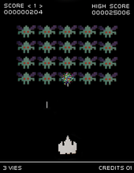

Space Invaders est un shoot 'em up fixe en deux dimensions.
Le joueur controle un canon laser qu'il peut deplacer horizontalement, au bas de l'ecran.
Dans les airs, des rangées d'aliens se déplacent latéralement
tout en se rapprochant progressivement du sol et en lançant des missiles.
'objectif est de détruire avec le canon laser une vague ennemie, qui se compose de cinq
rangees de onze aliens chacune, avant qu'elle n'atteigne le bas de l'écran.
Le joueur gagne des points à chaque fois qu'il détruit un envahisseur.
Le jeu n'autorise qu'un tir à la fois et permet d'annuler ceux des ennemis en tirant dessus
Le jeu ne se termine que lorsque le joueur perd, ce qui en fait le premier jeu sans fin.

Les aliens tentent de detruire le canon en tirant dessus pendant qu'ils s'approchent du bas de l'ecran.
S'ils l'atteignent ou arrivent jusqu'au sol, ils ont réussi leur invasion et le jeu est fini.
De temps en temps, un vaisseau spatial apparait tout en haut de l'ecran
et fait gagner des points bonus s'il est detruit. Quatre batiments destructibles permettent au joueur
de se proteger des tirs ennemis. Ces défenses se désintegrent progressivement sous l'effet des projectiles
adverses et de ceux du joueur. Le nombre de batiments n'est pas le meme d'une version à l'autre.